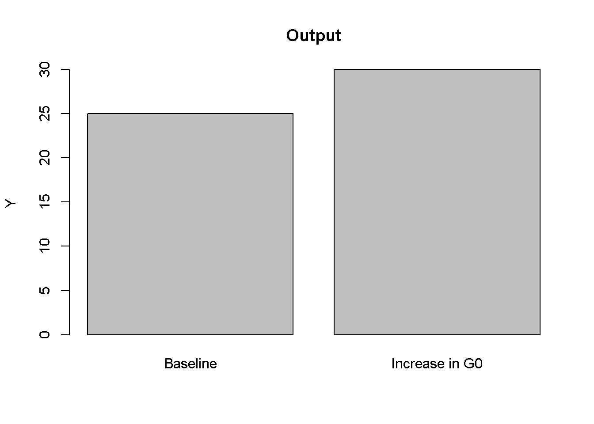
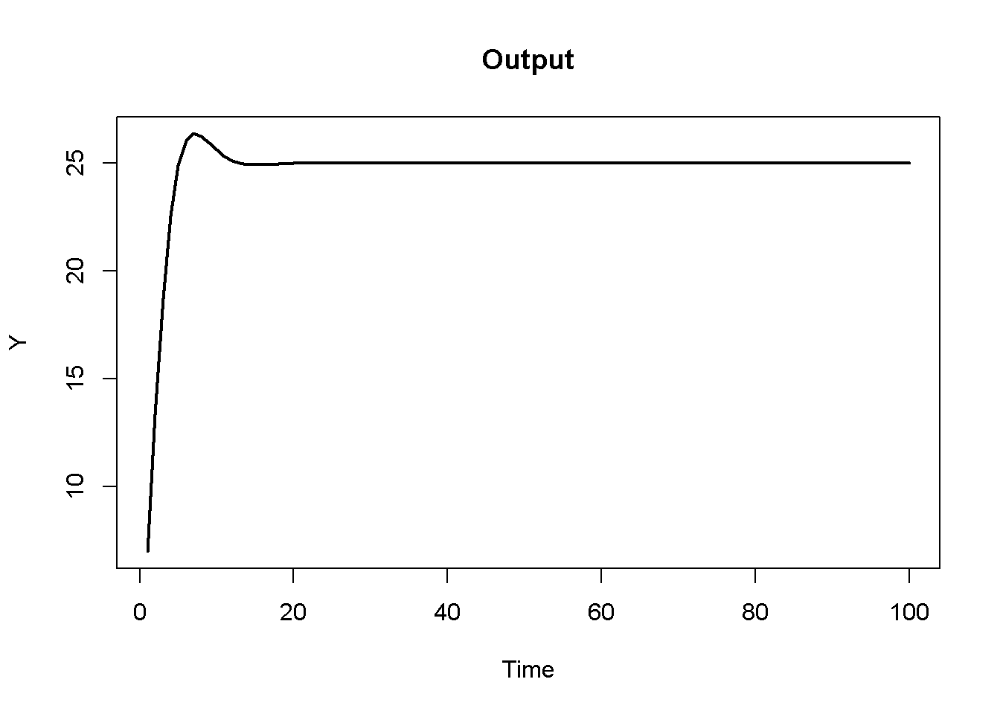
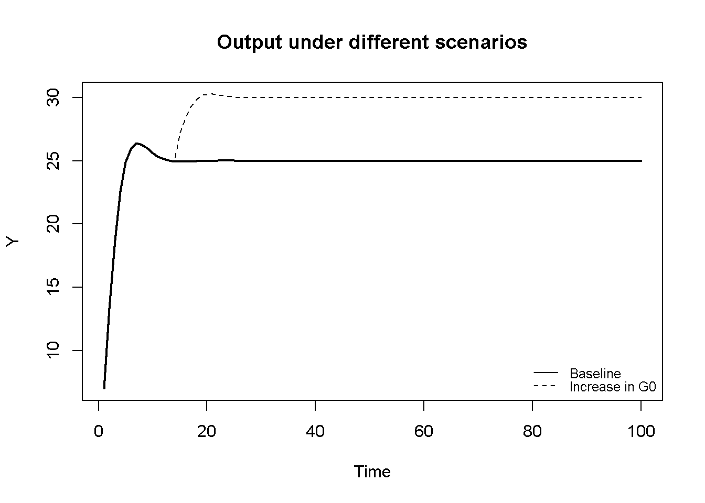

Why do we build formal economic models? Because they help us think carefully about the causal mechanisms that generate certain economic outcomes (e.g. unemployment). Models are especially useful when the variables of interest are inherently quantitative (e.g. the interest rate and unemployment) and when several of these quantitative variables interact with each other. More specifically, models provide a precise formal representation of a set of interlinked causal mechanisms that are often difficult to analyse informally.
Every economic model essentially consist of three things:
a set of \(N\) equations
a set of \(N\) endogenous variables
a set of exogenous or fixed coefficients (‘parameters’) and exogenous variables
The solution to the model, its ‘equilibrium’, will pin down values for the endogenous variables of the model for a given set of parameters and exogenous variables. Thus, the endogenous variables, e.g. unemployment, are determined within the system, while exogenous variables are determined outside of the system and often reflect policy variables, such as the central bank interest rate. The equations connect the variables of the system. They typically express:
economic (accounting) identities (e.g. that in a closed economy without government, saving is income that is not consumed: \(S=Y-C\))
budget constraints (e.g. that business investment can be financed out of retained profits and new debt, \(I=\Pi+\Delta D\))
behavioural functions (e.g. that households consume a constant proportion of their income, \(C=c_1Y\)), which often contain key parameters of the model (e.g. the marginal propensity to consume \(c_1\))
equilibrium conditions (e.g. that demand must be equal to supply)
Equations may be linear or nonlinear. If a model contains nonlinear relationships between the endogenous variables, it may admit more than one solution (often called multiple equilibria).
Economic models can be either static or dynamic. In a static model, time plays no role and all endogenous variables are determined simultaneously. In a dynamic model, time matters and the endogenous variables adjust gradually over time.
The endogenous variables are typically interrelated: e.g. \(x\) determines \(y\), but \(y\) also determines \(x\). These interrelationships can be:
simultaneous: \(x\) and \(y\) determine each other simultaneously (within the same period)
recursive: \(x\) affects \(y\) only in \(t+1\) (or vice versa)
Unlike static models, dynamic models describe what happens out of equilibrium.1 Note that dynamic models may contain both simultaneous and recursive relationships.
Whether the relationships between the variables is simultaneous or recursive has implications for how the model can be solved. In general, simple economic models can often be solved analytically without a computer. If the model contains simultaneous relationships, it needs to be solved as a simultaneous system by solving for the endogenous variables through repeated substitution. This means going from the so-called ‘structural form’, i.e. the full set of equations, to the so-called ‘reduced form’, where the right-hand side of the equations only contains exogenous variables and parameters. If the system is linear, techniques from linear algebra such as matrix inversion or Cramer’s rule can be used (see Chiang and Wainwright (2005), chaps. 4-5). If the system contains recursive relationships, the equilibrium solution can be found by setting \(x_{t+i}=x_{t-i}=x_{t}\) for all \(x\) and then solving the resulting simultaneous system (more on this Chapter 9).
However, often a complete analytical solution is difficult to come by. Common challenges are:
a model has more than 3 dimensions (\(N>3\)): then it’s very tedious to compute analytical solutions
a model has nonlinearities that preclude the computation of analytical solutions
a model is dynamic and you want to examine the dynamic adjustment of the endogenous variables (which is tedious to do analytically)
In these cases, numerical solution by means of computer simulation becomes useful. A key advantage is that it allows you to study much more complex models than the analytical approach does. A key disadvantage is that numerical solution requires the choice of a (possibly arbitrary) set of numerical values for the models’ parameters. It is thus less general than analytical solution – a limitation which should be borne in mind. We think that both analytical and numerical approaches are useful. Correspondingly, we supplement the numerical simulations with analytical model solutions where possible.
Solving economic models numerically
If a (dynamic) model exclusively contains recursive relationships, it can be solved iteratively by sequentially updating the endogenous variables from (arbitrarily set) initial conditions. This is easy to do with a computer. By contrast, if interrelationships are simultaneous, solving the system for the endogenous variables as described above is less trivial for a computer (finding the solution for \(x\) requires the solution of \(y\), but the latter requires in turn the solution for \(x\)). One approach is to use linear algebra: cast the system in matrix form (\(b=Ax\)) and let the computer find \(x^*=A^{-1}b\) through some algorithm (e.g. the Gauss-Seidel method).
We will use an approach that is simpler and based on iteration:
choose a set of numerical parameter values (e.g. \(c_1=0.8\))
choose (arbitrary but non-zero) initial values for the endogenous variables (e.g. \(C_0=1)\)
then solve the system of equations many times using a for loop
In this way, the solution gets approximated successively.
A limitation of the method of iteration is that it will only converge to the solution of the simultaneous component of a model if the equilibrium is stable (more on stability in Chapter 9). For most static models, stability is required for the model to be economically meaningful. In that sense, if the iterative approach does not yield a solution, this is a sign that the model and/or parameterisation needs to be reconsidered. In dynamic models, stability is a key question that should be addressed in any case. Therefore, this limitation of the method of iteration may not be too restrictive in practice.
Solving economic models numerically: examples
A static model
Consider a two-dimensional simultaneous system represented by a simple Keynesian goods market model:
\[
Y= C + I_0
\]\[
C = c_0 + c_1Y
\] In a closed economy without government, aggregate demand is composed of consumption \(C\) and investment \(I\), with the latter assumed to be exogenous. Goods market equilibrium requires aggregate demand to be equal to aggregate income \(Y\). Consumption is assumed to be determined by an autonomous component \(c_0\) and a marginal propensity to consume out of income \(c_1\).
Suppose the parameters are given by \(c_0=3\) and \(c_1=0.8\). You are interested in how a change in investment from \(I_0=5\) to \(I_0=6\) affects the solution of the system. Through the method of substitution, we can easily derive that \(Y^*=\frac{c_0+I_0}{1-c_1}\). The code below shows how to find this solution via simulation.
### Simulate Keynesian goods market model via iteration#Clear the environment rm(list=ls(all=TRUE))# Set number of parameterisations that will be consideredS=2# Set fixed parameter valuesc0=3c1=0.8#Create vector in which equilibrium solutions from different parameterisations will be storedY_eq=vector(length=S)C_eq=vector(length=S)#Create vector with parameter that will change I0=vector(length=S)I0[1]=5I0[2]=6# Initialise endogenous variables at arbitrary positive value Y=C=1#Solve this system numerically through 1000 iterations based on the initialisationfor(iin1:S){for(iterationin1:1000){Y=C+I0[i]C=c0+c1*Y}# close iterations loop#Save results for different parameterisations in vectorY_eq[i]=YC_eq[i]=C}# close parameterisations loop# Display solutionsY_eq
[1] 40 45
C_eq
[1] 35 39
# Verify solutions for Y(c0+I0[])/(1-c1)
[1] 40 45
Let’s break this code down a little bit:
set the number of scenarios \(S\), define parameter values, and create vectors of length \(S\) in which results for endogenous variables will be stored
define changes in exogenous variables or parameters (i.e. construct different scenarios)
initialise the endogenous variables
write down the equations (solved for the endogenous variables such that every endogenous variable of the system appears on the left-hand side of an equation exactly once)
place these equations inside a for loop
the loop says: repeat the segment of code insights the curly brackets 1000 times
nest the loop that solves the system in an outer loop that loops through different parameterisations (here for \(I_0\))
after the iterations loop is finished, save the results for the current pameterisation
What happens is the following: in the first iteration, \(Y\) and \(C\) are calculated based on the initial values and the parameter values. In the second iteration, the values are then overwritten based on the results from the first iteration. This process continues 1000 times. In this way, the correct solution is successively approximated. If you have an analytical solution, you can compare it with the numerical one to double-check your results.
When does the method of iteration fail to provide a solution? In the following code, everything is the same with the only difference that the marginal propensity to consume is now larger than unity (\(c_1=1.2\)). Now the numerical simulation fails to find the solution. This is because with \(c_1>0\), the so-called Keynesian equilibrium condition is violated and the system happens to be unstable. We will discuss in Chapter 9 the issue of stability and how to analyse it formally. At this point, we simply note that the method of iterations requires static models to be stable to yield equilibrium solutions.
### Parameterisation for which method of iteration fails#Clear the environment rm(list=ls(all=TRUE))# Set number of parameterisations that will be consideredS=2# Set fixed parameter valuesc0=3c1=1.2#Create vector in which equilibrium solutions from different parameterisations will be storedY_eq=vector(length=S)C_eq=vector(length=S)#Create vector with parameter that will change I0=vector(length=S)I0[1]=5I0[2]=6# Initialise endogenous variables at arbitrary positive value Y=C=1#Solve this system numerically through 1000 iterations based on the initialisationfor(iin1:S){for(iterationin1:1000){Y=C+I0[i]C=c0+c1*Y}# close iterations loop#Save results for different parameterisations in vectorY_eq[i]=YC_eq[i]=C}# close parameterisations loop# Display solutionsY_eq
[1] 5.818655e+80 8.832196e+159
# Verify solutions for Y(c0+I0[])/(1-c1)
[1] -40 -45
A dynamic model (in discrete time)
Consider now a dynamic version of the Keynesian goods market model that was proposed by Paul Samuelson (1939). In this model, investment (\(I\)) becomes endogenous and reacts to the change in consumption. Aggregate demand now also contains government spending (\(G\)), which is assumed to be exogenous. Consumption (\(C\)) responds to changes in income (\(Y\)) with a lag:
\[
Y_t = C_t + I_t + G_0
\]\[
I_t = \beta(C_t - C_{t-1})
\]\[
C_t=c_1Y_{t-1}.
\] This is a dynamic model, in which the endogenous variables adjust gradually over time. However, the model is not purely recursive as investment reacts to consumption in the same period (and output to consumption and investment). By shifting \(Y_t=C_t + I_t + G_0\) one period back, substitution into the consumption, and then investment function, the system can be reduced to two equations that are fully recursive:
\[
C_t= c_1(C_{t-1} + I_{t-1} + G_0)
\]\[
I_t= \beta[c_1(C_{t-1} + I_{t-1} + G_0) - C_{t-1}]
\] We can find the solution for output analytically by setting \(x_t=x_{t-1}\) for all variables and then applying the method of substitution. This yields \(Y^*=\frac{G_0}{1-c_1}\). The code below shows how to find this solution through simulation.
### Simulate Samuelson 1939#Clear the environment rm(list=ls(all=TRUE))# Set number of periods for which you want to simulateQ=100# Set number of parameterisations that will be consideredS=2# Set period in which shock or shift in an will occurs=15# Set fixed parameter valuesc1=0.8beta=0.6# Construct (S x Q) matrices in which values for different periods will be stored; initialise at 1C=matrix(data=1, nrow=S, ncol=Q)I=matrix(data=1, nrow=S, ncol=Q)#Construct matrices for exogenous variable or parameter that will change over time to capture different scenariosG0=matrix(data=5, nrow=S, ncol=Q)# Set parameter values for different scenariosG0[2,s:Q]=6# scenario: permanent increase in government spending from I0=5 to I0=6 from period s=15 onwards#Solve this system recursively based on the initialisationfor(iin1:S){for(tin2:Q){C[i,t]=c1*(C[i,t-1]+I[i,t-1]+G0[i,t-1])I[i,t]=beta*(c1*(C[i,t-1]+I[i,t-1]+G0[i,t-1])-C[i,t-1])}# close time loop}# close scenarios loop# Calculate outputY=C+G0+I# Display solutionY[,Q]
[1] 25 30
# Verify solutions for Y(G0[,Q])/(1-c1)
[1] 25 30
The code solves the recursive system numerically through iteration. Let’s again break down what the code does:
set the number of periods for which we want to simulate the model (here \(Q=100\)), set the number of scenarios \(S\) and the period \(s\) in which a change in the scenario should occur
set the parameter values and create \((S \times Q)\) matrices in which results for endogenous variables will be stored, such that the columns represent time and the rows represent different scenarios; initialise the endogenous variables
define changes in exogenous variables or parameters (i.e. construct different scenarios)
write down the equations (solved for the endogenous variables such that every endogenous variable of the system appears on the left-hand side of an equation exactly once)
place these equations inside a for loop that runs from \(t=2\) to \(Q\)
the loop says: repeat the segment of code insights the curly brackets, each time with the index number \(t\) shifted by \(+1\) until \(t=Q\)
nest the loop that solves the system in an outer loop that loops through different parameterisations (here for \(G_0\))
Note that due to the exclusive presence of recursive equations, no loop is need that iterates the equations within every period. However, many dynamic models contain both simultaneous and recursive equations. In this case, a third loop inside the time loop is needed that iterates the equations within each period so as to solve the simultaneous equations. Otherwise, the approach to solving dynamic systems is not fundamentally different from the one for static systems.
At the end of the simulation run, we can again compare the results from the numerical simulation with the analytical solution. However, what is perhaps more interesting is to trace the dynamic adjustment of the endogenous variables towards equilibrium. The best way to examine this is by plotting the results.
How to plot the results of a model
We will consider two main ways to plot model outputs: bar charts for static models and time series charts for dynamic models. Bar charts compare the equilibrium values of \(Y_t\) for different parameterisations:
# Bar chart of different equilibrium solutions of Samuelson (1939) modelbarplot(Y[,Q], ylab="Y", main="Figure 1: Output", names.arg=c("Baseline", "Increase in G0"))

Next, we show a basic version of a time series chart that displays the dynamics of \(Y_t\):
# Time series chart of output dynamics in Samuelson (1939) modelplot(Y[1, 1:100],type="l", col=1, lwd=2, lty=1, xlab="Time", ylab="Y")title(main="Figure 2: Output", cex=0.8)

As you can see, there are many settings you can fiddle around with to adjust the appearance of the graph to your liking (run ‘?plot’ to find information about the different options.) If we want to plot the dynamics for the two different parameterisations, we can do the following:
# Time series chart of output dynamics for different scenarios in Samuelson (1939) modelplot(Y[1, 1:100],type="l", col=1, lwd=2, lty=1, xlab="Time", ylab="Y", ylim=range(min(Y[1,], Y[2,]), max(Y[1,], Y[2,])))title(main="Figure 3: Output under different scenarios", cex=0.8)lines(Y[2, 1:100],lty=2)legend("bottomright", legend=c("Baseline", "Increase in G0"), lty=1:2, cex=0.8, bty ="n", y.intersp=0.8)

Note that we have adjusted the range of the y-axis to make sure the graph captures the minimum and maximum values from both parameterisations.
Finally, consider a plot for \(C_t\) and \(I_t\) with two separate axes:
# Time series chart of Samuelson (1939) model with separate axes for consumption and investmentplot(C[1, 1:100], type="l", col=1, lwd=2, lty=1, xlab="Time", ylab="Y")title(main="Figure 3: Consumption and Investment", cex=0.8)par(mar =c(5, 4, 4, 4)+0.3)par(new =TRUE)plot(I[1, 1:100], type="l", col=1, lwd=2, lty=2, font.main=1, cex.main=1,ylab ='', axes=FALSE, xlab ='', ylim =range(I[1, 1:100]), cex=0.8)axis(side =4, at=pretty(range(I[1, 1:100])))mtext("I", side =4, line =3)legend("right", legend=c("C", "I"), lty=1:2, cex=0.8, bty ="n", y.intersp=0.8)
How to create a directed graph of a model
Another perspective on a model’s properties is provided by its directed graph. A directed graph consists of a set of nodes that represent the variables of the model. Nodes are connected by directed edges. An edge directed from a node \(x_1\) to node \(x_2\) indicates a causal impact of \(x_1\) on \(x_2\).
The directed graph can be derived from the model’s Jacobian matrix.2 Let \(x\) be the vector containing the model’s endogenous variables and \(f(x)\) the system of equations making up the model. The Jacobian matrix is then given by \(J=\frac{\partial f()}{\partial x}\). As we often also want to display exogenous variables in the directed graph, it can be useful to expand the Jacobian matrix by adding rows and columns for those exogenous variables.
Next, construct an ‘auxiliary’ Jacobian matrix \(M\) in which all the non-zero elements of the Jacobian are replaced by ones, whereas zero elements remain unchanged, i.e.
Finally, taking the transpose of this `auxiliary’ Jacobian matrix yields the adjacency matrix\(A=M^T\), which is a binary matrix whose elements (\(A_{ji}\)) indicate whether there is a directed edge from a node \(x_j\) to node \(x_i\). From the adjacency matrix, the directed graph is constructed.
The code below shows this for the example of the Samuelson (1939) model.
## Create directed graph# Construct auxiliary Jacobian matrix for 4 variables: # endogenous: (1) Y, (2) C, (3) I# exogenous: (4) G0# where non-zero elements in regular Jacobian are set to 1 and zero elements are unchanged#1 2 3 4M_mat=matrix(c(0,1,1,1, #11,0,0,0, #20,1,0,0, #30,0,0,0), #4 4, 4, byrow=TRUE)# Create adjacency matrix from transpose of auxiliary Jacobian and add column namesA_mat=t(M_mat)# Create directed graph from adjacency matrixlibrary(igraph)dg=graph_from_adjacency_matrix(A_mat, mode="directed", weighted=NULL)# Define node labelsV(dg)$name=c("Y", "C", "I", expression(G[0]))# Plot directed graph matrixplot(dg, main="Figure 4: Directed graph of Samuelson model", vertex.size=20, vertex.color="lightblue", vertex.label.color="black", edge.arrow.size=0.3, edge.width=1.1, edge.size=1.2, edge.arrow.width=1.2, edge.color="black", vertex.label.cex=1.2, vertex.frame.color="NA", margin=-0.08)
Broadly speaking, three types of nodes are possible:
nodes from which arrows only point away represent exogenous variables (\(G_0\) in Figure 4)
nodes to which arrows point but from which arrows also point away represent endogenous variables that also have a causal impact on other variables (\(Y\), \(C\), and \(I\) in Figure 4)
nodes to arrows only point towards represent endogenous variables that are residuals (not present in Figure 4)
It can thus be seen that the key exogenous variable in the Samuelson (1939) model is government spending \(G_0\), which determines aggregate income, which in turn feeds into consumption. Consumption then feeds into investment, which feeds back into income yielding the multiplier-accelerator effect.
Appendix: How to simulate dynamic model in continuous time
Sometimes, dynamic economic models are written in continuous time where the time increment is assumed to be infinitesimally small. Consider, for example, a continuous-time version of the Keynesian goods market model:
\[
\dot{Y}= k(C + I_0 - Y)
\]
\[
C = c_0 + c_1Y,
\] where \(\dot{Y}=\frac{dY}{dt}\). To simulate this model, we have to approximate the differential equation for \(\dot{Y}\) by a difference equation for \(Y_t\) and let the time increment \(\Delta t\) become very small. More specifically, we write:
\[
Y(t+\Delta t)=Y_t + \dot{Y} \Delta t =Y_t + [k(C + I_0 - Y)]\Delta t.
\] This approach is also called the Euler forward method. The code below shows to implement that method. We use \(\Delta t = 0.01\). Note that we need to raise the time horizon \(Q\) and set the adjustment speed \(k\) relatively high to make sure that the system has effectively converged to the equilibrium by \(Q\).
### Simulate continuous time version of Keynesian goods market model#Clear the environment rm(list=ls(all=TRUE))# Set number of periods for which you want to simulateQ=800# Set number of parameterisations that will be consideredS=1# Set fixed parameter valuesc0=3c1=0.8k=8delta=0.01# Construct matrices in which values for different periods will be stored; initialise at 1Y=matrix(data=1, nrow=S, ncol=Q)C=matrix(data=1, nrow=S, ncol=Q)#Construct matrices for exogenous variable I0=matrix(data=5, nrow=S, ncol=Q)#Solve this system recursively based on the initialisationfor(tin2:Q){for(iterationsin1:1000){Y[1,t]=Y[1,t-1]+delta*(k*(C[1,t-1]+I0[1,t-1]-Y[1,t-1]))C[1,t]=c0+c1*Y[1,t]}# close within-period loop}# close time loop# Verify solutions for Y(c0+I0[1,Q])/(1-c1)
[1] 40
Y[1,Q]
[1] 39.9999
References
Chiang, Alpha C, and Kevin Wainwright. 2005. Fundamental Methods of Mathematical Economics. 4th ed. New York: McGraw-Hill Education.
Fennell, Peter G., David J. P. O’Sullivan, Antoine Godin, and Stephen Kinsella. 2015. “Is It Possible to Visualise Any Stock Flow Consistent Model as a Directed Acyclic Graph?”Computational Economics 48 (2): 307–16. https://doi.org/10.1007/s10614-015-9521-8.
Samuelson, Paul A. 1939. “Interactions between the Multiplier Analysis and the Principle of Acceleration.”The Review of Economics and Statistics 21 (2): 75–78. https://doi.org/10.2307/1927758.
That raises the question of whether an equilibrium is stable or unstable, which is discussed in Chapter 9.↩︎
See Fennell et al. (2015) for a neat exposition.↩︎